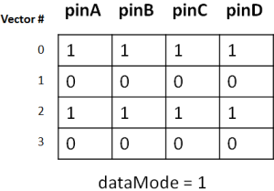
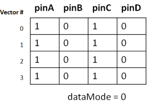

RDI protocol template
SmartRDI provides a protocol template file which is named as protocolTemplate.h.
You can use this file to create your own protocol.
Follow the steps to create your own protocol:
- Copy the available template file to your test method project directory.
- Rename the file.
- Modify the parameters in the file.
- Use writeTemplatePatternName and readTemplatePatternName to create a template patterns.
The following table lists the functions and parameters defined in the template file.
getInterfaceName() |
Returns the protocol name. |
addressBits |
The bit number of the register address. |
dataBits |
The bit number of the register data. |
highWaveformIndex |
The physical waveform index to drive high. |
lowWaveformIndex |
The physical waveform index to drive low. |
highStrobeWaveformIndex |
The physical waveform index to compare high. |
lowStrobeWaveformIndex |
The physical waveform index to compare low. |
maskStrobeWaveformIndex |
The physical waveform index to compare mask. |
vecBitRepeats |
The repeat number of vector in the pattern. |
dataMode |
The sequence to read and write data of multiple pins. It can be: 1: Read and write the data horizontally, which means reading and writing the data in the order of the first data of all pins, the second data of all pins, and then the rest data for all the pins. 0: Read and write the data vertically, which means reading and writing the data of the first pin, and then the data of second pin and the data of other pins one by one. You can find more details below the table. |
readCycleOffset |
When instructions are used in the protocol template label, you need to specify the cycle offset number to read the data. |
writeTemplatePatternName |
The pattern used as write template. |
writePinName |
The pin(s) to write. If a pin group name is specified for the parameter, all the pins in the group have the same data to be written to them. If a pin list is specified for the parameter, the address data is written to pins in serial order. |
writeAddressVectorNumberLSB |
The vector number for the LSB of the address to write. |
writeAddressVectorNumberMSB |
The vector number for the MSB of the address to write. |
writeDataVectorNumberLSB |
The vector number for the LSB of the data to write. |
writeDataVectorNumberMSB |
The vector number for the MSB of the data to write. |
writeVectorsPerRegister |
This is used for burst write. It specifies the number of vectors from the start vector of a data block to the start vector of the next data block. |
readTemplatePatternName |
The pattern used as read template. |
readAddressPinName |
The pin(s) containing the address to read. If a pin group name is specified for the parameter, all the pins in the group have the same address. If a pin list is specified for the parameter, the data is written to pins in serial order. |
readPinName |
The pin(s) containing the data to read. |
readAddressVectorNumberLSB |
The vector number for the LSB of the address to read. |
readAddressVectorNumberMSB |
The vector number for the MSB of the address to read. |
readDataVectorNumberLSB |
The vector number for the LSB of the data to read. |
readDataVectorNumberMSB |
The vector number for the MSB of the data to read. |
readVectorsPerRegister |
This is used for burst read. It specifies the number of vectors from the start vector of a data block to the start vector of the next data block. |
dataMode
If the data to write is 0xf0f0 and the pins to
write are "pinA, pinB, pinC, pinD", the data for each pin for dataMode 1 and dataMode 0 are as
shown in the figures below.


Example
This is an example of a SmartRDI protocol template:
#ifndef PROTOTEMPLATE_H_
#define PROTOTEMPLATE_H_
#include <string>
#include <map>
#include "rdi.hpp"
using namespace std;
/**
* @class protocolTemplate
*
* @brief Protocol customized class template (D2S)
*
* @details This class must be defined before expected protocol is applied in the TP.
* In structure, it must be inherited from protocolBase and corelated parameters
* must be defined. Even if some of the parameters is not used, a dummy value must be defined as well.
*
* @note How to apply user customerized protocol template :
* - Duplicate file "protocolTemplate.h" and rename file to your protocol name, for example, "protocol_JTAG.h"
* - Do change the header as following :
* - "#ifndef PROTOTEMPLATE_H_" to "#ifndef PROTO_JTAG_H_"
* - "#define PROTOTEMPLATE_H_" to "#define PROTO_JTAG_H_"
* - Do replace name "protocolTemplate" to "yourProtocolName" throughout text line from class definition to the end.
* e.g. Replace "protocolTemplate" with "protocolJtag"
* - Do customerized parameters in getXXXXXX() functions. Pat attention to getInterfaceName(),
* which will be referred by LEGO as your protocol name and used int LEGO() .protocol("prtocolName")....
* - In your UTM cpp file do include your customerized protocol class, for example, #include "protocol_JTAG.h"
*
*/
class protocolTemplate : public protocolBase
{
public:
virtual string getInterfaceName() { return "interfaceName"; }
/******************************************************************************
* General Protocol Parameter
* ****************************************************************************/
virtual void init()
{
interfaceName = getInterfaceName();
dataMode = 0; // 0: organize data vertically 1: organize data horizontally
addressBits = 8;
dataBits = 8;
highWaveformIndex = 1;
lowWaveformIndex = 0;
highStrobeWaveformIndex = 3;
lowStrobeWaveformIndex = 2;
maskStrobeWaveformIndex = 4;
vecBitRepeats = 1;
/******************************************************************************
* Protocol Write Parameters
* ****************************************************************************/
writeTemplatePatternName = "d2s_template";
writePinName = "DATA1";
writeAddressVectorNumberLSB = 7;
writeAddressVectorNumberMSB = 0;
writeDataVectorNumberLSB = 22;
writeDataVectorNumberMSB = 15;
writeVectorsPerRegister = 10;
/******************************************************************************
* Protocol Read Parameters
* ****************************************************************************/
readTemplatePatternName = "d2s_template";
readAddressPinName = "DATA1";
readPinName = "DATA1";
readAddressVectorNumberLSB = 7;
readAddressVectorNumberMSB = 0;
readDataVectorNumberLSB = 22;
readDataVectorNumberMSB = 15;
readVectorsPerRegister = 10;
readCycleOffset = 0;
}
static protocolTemplate& getInstance()
{
static protocolTemplate ins;
ins.init();
return ins;
}
protected:
protocolTemplate() { getProtocolMap()[getInterfaceName()] = this; }
protocolTemplate(const protocolTemplate&);
protocolTemplate& operator= (const protocolTemplate&);
};
REGISTER_PROTOCOL(protocolTemplate);
#endif /* PROTOTEMPLATE_H_ */Functional changes
- Introduced in SmartRDI 2.1.0